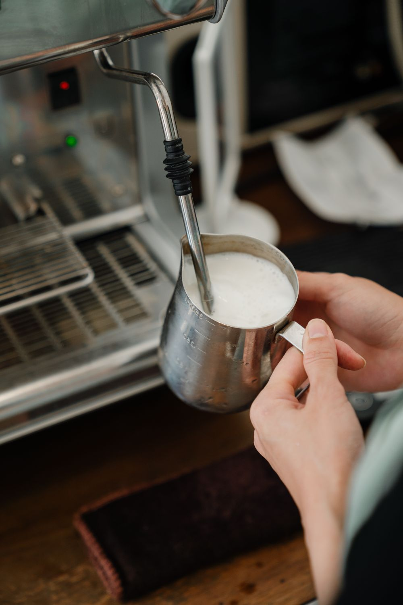
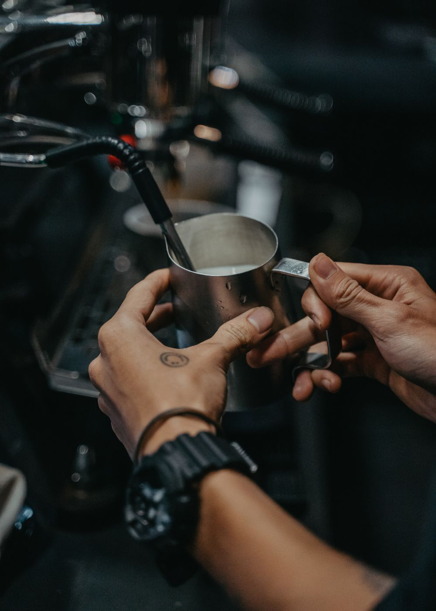

우유에 공기를 넣어
부드러운 거품을 만드는 과정,
스티밍
뜨거운 스팀으로 우유를 데우며 공기를 넣고,
우유를 회전시켜 거품을 고르게 섞어요.

한 잔의 부드러움은
우유에서 시작돼요.
작고 고른 거품은 라떼의 부드러운 질감을 만들어요.
곱게 스티밍한 우유는
에스프레소와 어우러지고,
라떼 아트를 그리는 바탕이 되기도 해요.


스티밍은 소리를 단서로 배우는 과정.
하지만 소리가 들리지 않는다면?
사진에 마우스를 올리거나 눌러 이야기를 펼쳐보세요.
